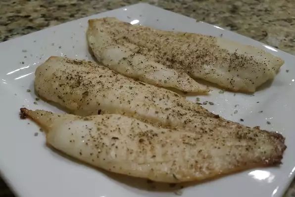

Baked Fish Fillets

Good recipe for any filleted fish. If using other fish, cook time may vary
depending on the type and thickness of fillets.
Ingredients
- 1 tablespoon vegetable oil, or to taste
- 2 pounds mackerel fillets
- 1 teaspoon salt
- ⅛ teaspoon ground black pepper ⅛ teaspoon ground black pepper
- ½ teaspoon ginger paste
-
1 whole cooked rotisserie chicken - skinned, boned, and meat shredded
- ¼ cup butter, melted
- 2 tablespoons lemon juice
- ⅛ teaspoon ground paprika
Steps
-
Preheat oven to 350 degrees F (175 degrees C). Grease a baking pan with
vegetable oil.
-
Place mackerel fillets in the baking pan; season with salt and pepper.
-
Mix butter, lemon juice, and paprika together in a bowl. Pour over
mackerel fillets.
-
Bake in the preheated oven until mackerel flakes easily with a fork, 20 to
25 minutes.